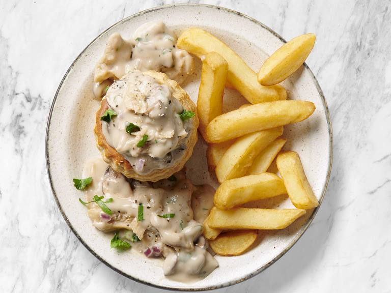

Vol-au-vent

Ingrediënten
- 2 bakjes (320 g) Poulettekes (plantaardige kipstuckjes)
- 1 el plantaardige olie (of margarine)
- 1 teen knoflook (fijngesneden)
- 200 g witte champignons in 4 gesneden
- 500 ml water
- 500 ml sojaroom
- 200 ml Knorr vloeibare groentebouillon
- 80 g Maizena Instant roux wit
- 20 ml citroensap
- 5 g kipkruiden
Bereiding
- Verhit de vetstof en bak er de fijngesneden knoflook en de champignons in aan tot goud bruin.
- Voeg het water, de room, de Knorr vloeibare groentebouillon toe en breng aan de kook.
- Voeg al roerend de maizena roux toe en laat het geheel 5 minuten zachtjes koken.
- Voeg de Poulettekes en warm goed door.
- Breng op smaak met het citroensap en de kippenkruiden
- Werk af met wat fijngesneden peterselie (optioneel) en vergeet het koninginnehapje niet!
- Lekker met frietjes, kroketjes of puree!